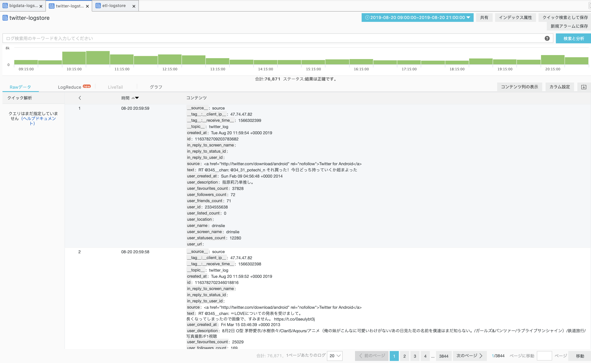

LogServiceでOSSへデータを集める方法
はじめに
本章はAlibabaCloud LogServiceを使ってOSSへデータを送ります。ゴールとしては以下のような構成図になります。
また、OSSにデータ収集後、E-MapReduceでHDFSへのETL処理がありますが、こちらは「OSSとE-MapReduce編」「ETL編」にて重複するため、割愛させていただきます。
（この章のゴールは外部データソースをOSSへ集約する、のみとなります）

LogServiceとは
AlibabaCloudのLogServiceは迅速にログデータを収集、処理、送信、照会/分析することができるプロダクトサービスです。
詳しいことはhelpページにて記載していますので、こちらを参照ください。
https://jp.alibabacloud.com/help/doc-detail/48869.htm
LogServiceでのデータ収集方法
LogServiceでのデータ収集方法は様々な方法がありますが、今回はtwitterのtweetデータを収集、OSSヘ転送する処理を目指します。イメージとしてはECSでTwitterデータを収集、それをLogServiceに転送し、LogServiceによりOSSへParquet形式でデータ転送、という流れになります。

Step1 . LogServiceでプロジェクトの作成、Logstoreを作成します。
こちらにやり方が記載されていますので、説明は割愛します。
https://jp.alibabacloud.com/help/doc-detail/54604.htm
Step2. ECSインスタンスを起動 今回、LogService上で構築することも可能ですが、twitter APIを利用するためにECSでLogService APIと連携して処理します。
下準備として、ECSインスタンスに以下ライブラリのインストールをします。
pip3.6 install -U aliyun-log-python-sdk
pip3.6 install twitter次は以下、Pythonファイルtweet.pyを作成し、実行します。
ssh接続が切れても恒久的に起動し続けたい場合は、nohup python3.6 tweet.py &と実行してください。
# -*- coding: utf-8 -*-
from aliyun.log.logitem import LogItem
from aliyun.log.logclient import LogClient
from aliyun.log.putlogsrequest import PutLogsRequest
import time
import twitter
SCREEN_NAME = 'write here'
# OAuth こちらはTwitter Developerに申請する必要があります。
# https://developer.twitter.com/content/developer-twitter/ja.html
ACCESS_TOKEN_KEY = ''
ACCESS_TOKEN_SECRET = ''
CONSUMER_KEY = ''
CONSUMER_SECRET = ''
endpoint = 'ap-northeast-1.log.aliyuncs.com'
accessKeyId = '<自分のaccessKeyId>'
accessKey = '<自分のaccessKey>'
project = 'bigdata-prod-tech'
logstore = 'twitter-logstore'
token = ""
def convert_to_text(row_value):
if type(row_value) is None:
return ""
elif type(row_value) is str:
return row_value
elif type(row_value) is int:
return str(row_value)
elif type(row_value) is float:
return str(row_value)
elif type(row_value) is bool:
if row_value is True:
return "True"
else:
return "False"
else:
return ""
def twitter_put_logs():
client = LogClient(endpoint, accessKeyId, accessKey, token)
oauth = twitter.OAuth(ACCESS_TOKEN_KEY,
ACCESS_TOKEN_SECRET,
CONSUMER_KEY,
CONSUMER_SECRET)
twitter_api = twitter.Twitter(auth=oauth)
friends = twitter_api.friends.ids(screen_name=SCREEN_NAME, count=5000)
friends_ids = ','.join(map(str, friends['ids']))
stream = twitter.TwitterStream(auth=oauth, secure=True)
for tweet in stream.statuses.filter(follow=friends_ids):
created_at = convert_to_text(tweet['created_at'])
_id = convert_to_text(tweet['id'])
id_str = convert_to_text(tweet['id_str'])
text = convert_to_text(tweet['text'])
source = convert_to_text(tweet['source'])
in_reply_to_status_id = convert_to_text(tweet['in_reply_to_status_id'])
in_reply_to_status_id_str = convert_to_text(tweet['in_reply_to_status_id_str'])
in_reply_to_user_id = convert_to_text(tweet['in_reply_to_user_id'])
in_reply_to_user_id_str = convert_to_text(tweet['in_reply_to_user_id_str'])
in_reply_to_screen_name = convert_to_text(tweet['in_reply_to_screen_name'])
user_id = convert_to_text(tweet['user']['id'])
user_id_str = convert_to_text(tweet['user']['id_str'])
user_name = convert_to_text(tweet['user']['name'])
user_screen_name = convert_to_text(tweet['user']['screen_name'])
user_location = convert_to_text(tweet['user']['location'])
user_url = convert_to_text(tweet['user']['url'])
user_description = convert_to_text(tweet['user']['description'])
user_followers_count = convert_to_text(tweet['user']['followers_count'])
user_friends_count = convert_to_text(tweet['user']['friends_count'])
user_listed_count = convert_to_text(tweet['user']['listed_count'])
user_favourites_count = convert_to_text(tweet['user']['favourites_count'])
user_statuses_count = convert_to_text(tweet['user']['statuses_count'])
user_created_at = convert_to_text(tweet['user']['created_at'])
contents = [
( 'created_at', created_at),
( 'id', _id),
( 'text', text),
( 'source', source),
( 'in_reply_to_status_id', in_reply_to_status_id),
( 'in_reply_to_user_id', in_reply_to_user_id),
( 'in_reply_to_screen_name', in_reply_to_screen_name),
( 'user_id', user_id),
( 'user_name', user_name),
( 'user_screen_name', user_screen_name),
( 'user_location', user_location),
( 'user_url', user_url),
( 'user_description', user_description),
( 'user_followers_count', user_followers_count),
( 'user_friends_count', user_friends_count),
( 'user_listed_count', user_listed_count),
( 'user_favourites_count', user_favourites_count),
( 'user_statuses_count', user_statuses_count),
( 'user_created_at', user_created_at)
]
topic = 'twitter_log'
source = 'source'
logitemList = []
logItem = LogItem()
logItem.set_time(int(time.time()))
logItem.set_contents(contents)
logitemList.append(logItem)
request = PutLogsRequest(project, logstore, topic, source, logitemList)
response = client.put_logs(request)
response.log_print()
if __name__=='__main__':
twitter_put_logs()
Step3. LogServiceでステータスチェックします。
LogServiceの「Logstoreリスト」の「解析検索」にある「解析」をクリックし、上記Pythonの実行結果、tweet情報を確認します。


今度はLogServiceの「Logstoreリスト」の「LogShipper」にある「OSS」をクリックし、収集したLogをOSSへ転送するように設定します。
今回のTwitterデータの場合は以下のような設定となりました。

Step4. OSSでデータが転送されてるかを確認します。データがあることを確認できたら終了です。

最後に
LogServiceはシンプルながら強力なデータ収集基盤となっています。しかも安いので、ビッグデータでデータを収集するときはLogServiceを使用するといいでしょう。